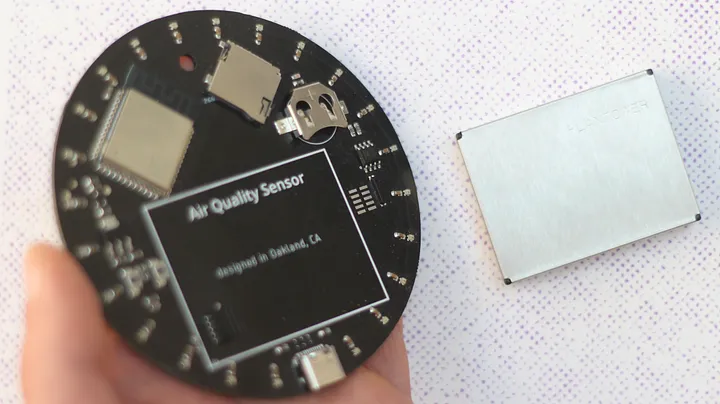

This article talks about the design decitions that I took while designing the Air Quality Sensor by studio LUFF.
Read the whole article HERE.
Abstract:
The Air Quality Sensor by studio LUFF exemplifies thoughtful design in the age of complex technology. Created with principles of sustainability, minimalism, and user empowerment, this device offers a unique approach to monitoring indoor air quality. It eschews reliance on cloud services, prioritizing local data storage and offline functionality for longevity and privacy. The sensor's minimalist design, using only a circuit board and sensor module, reduces material waste while maintaining accuracy. Its open hardware architecture encourages repair and customization, fostering a deeper understanding of the technology. The device embodies "quiet technology," seamlessly integrating into living spaces with an unobtrusive LED dial display. By making air pollution visible and providing users with actionable data, the Air Quality Sensor aims to enhance awareness of our immediate environment. This project not only addresses a critical health concern but also serves as a model for creating technology that is sustainable, understandable, and adaptable, inspiring a broader conversation about responsible product design in the digital age.
